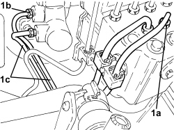

3340B52 RIGID PIPE (ONE) FROM MASTER CYLINDER (PUMP) TO A.B.S HYDRAULIC CONTROL UNIT - R.R.
- Path
- Procedures > 33 BRAKES > 3340 ANTI-LOCK BRAKING SYSTEM (ABS) > 3340B ABS SYSTEM PIPES > 3340B52 RIGID PIPE (ONE) FROM MASTER CYLINDER (PUMP) TO A.B.S HYDRAULIC CONTROL UNIT - R.R.
- Kind
- repair procedure (removal / refitting; the operation number is the code)
- Applies to
- all engines; all production periods
- Interactive page
- https://sloeber94.github.io/elrnDB-aBrrSpdr/en/#/946002149
Applies to: all engines; all production periods
 Removing
Removing
 Refitting
RefittingOp. 5530B52 BATTERY SUPPORT/DRIP TRAY - R.R
- Drain the brake-clutch fluid into a suitable container.
- Mark the pipes on the A.B.S. control unit
1. Undo the connectors (1a), (1b) and remove the pipes (1c).

Applies to: all engines; all production periods
Refitting
Removing- Position the pipes and secure the connectors to the A.B.S. control unit and to the brake pump tightening them to the recommended torque.
Component | Fastening | dia | Value (daNm) | Validity |
|---|---|---|---|---|
Brake pipe connectors | Connector | M10/M12 | 1.4 ÷ 1.8 |
Op. 5530B52 BATTERY SUPPORT/DRIP TRAY - R.R
Op. 0010T64 BRAKE AND/OR CLUTCH FLUID CHECK LEVEL AND TOP UP AS NECESSARY